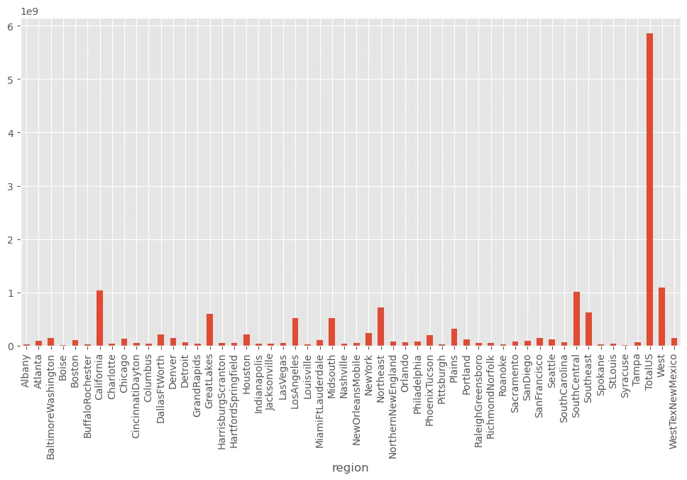
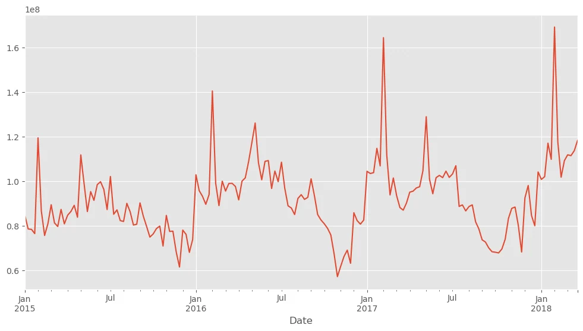
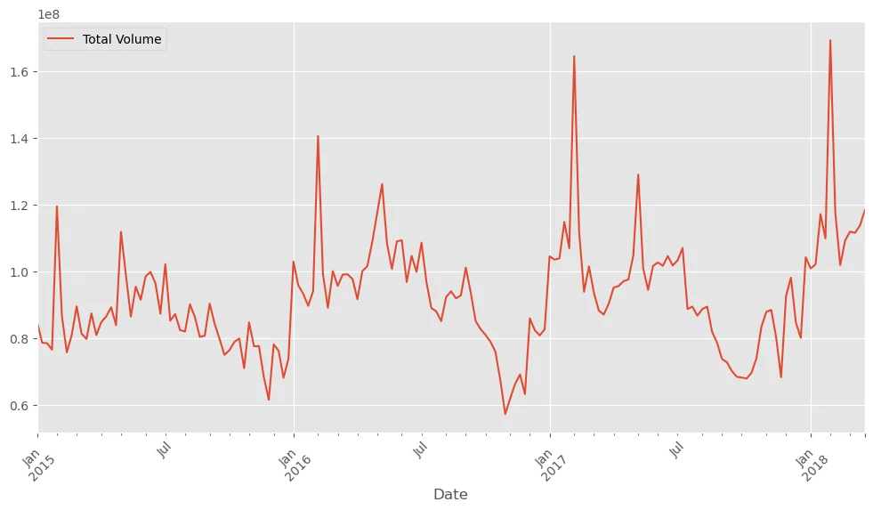
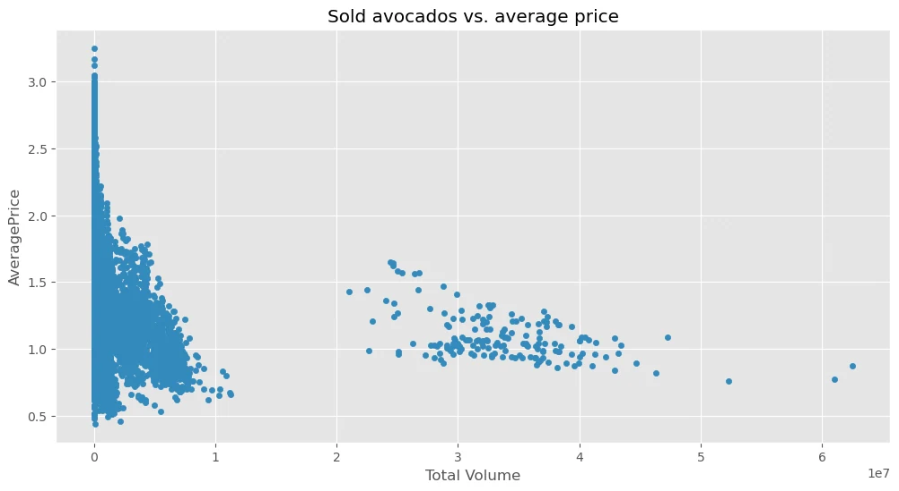
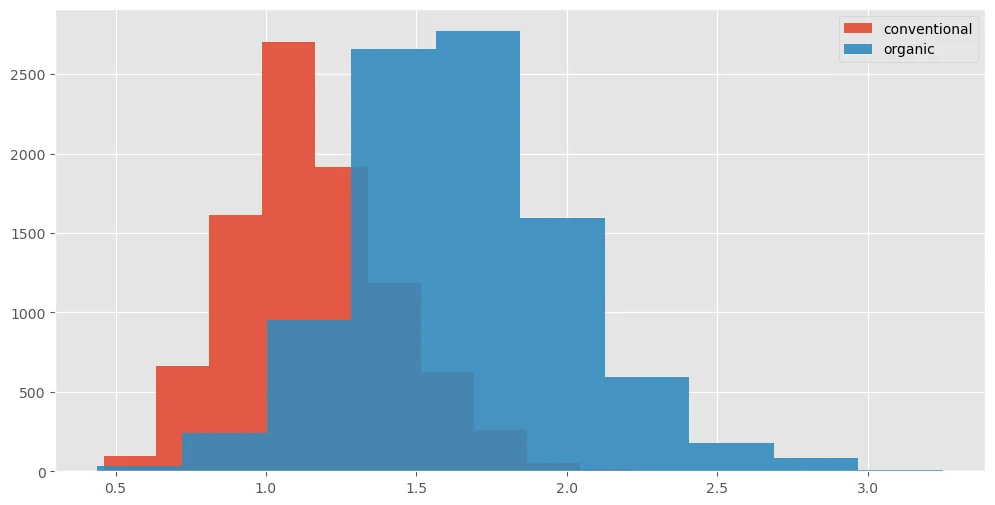
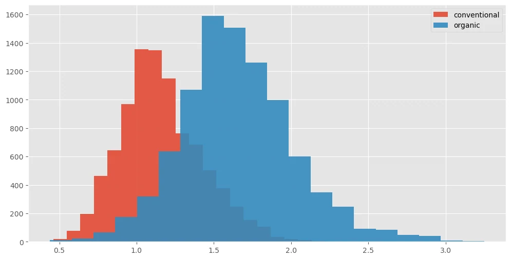
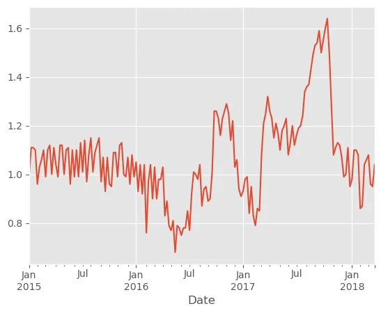
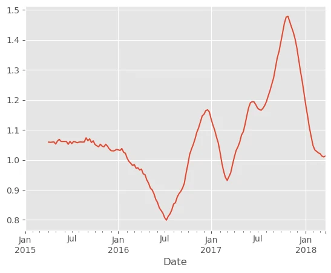
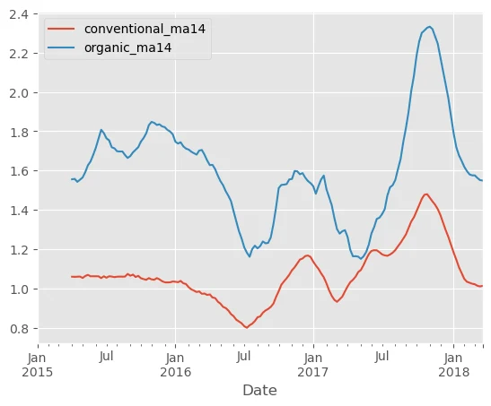
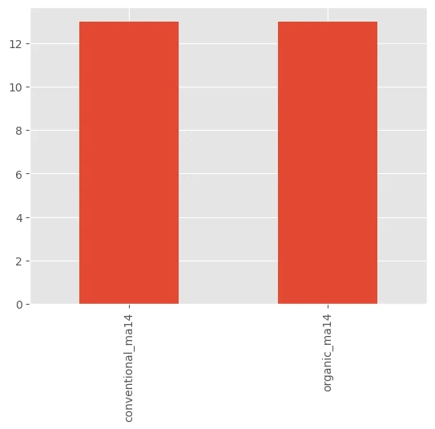

Notebook original: Pandas — Dan Novischi
Previzualizare statică a codului, notelor și rezultatelor existente în notebookul furnizat. Textul din această anexă rămâne în limba originală; explicațiile în română sunt în materialul de curs de mai sus.
Descarcă notebookul JupyterPandas - A Quick Introduction
# needed to plot correctly in jupyter notebook
import matplotlib.pyplot as plt
plt.style.use('ggplot')
%matplotlib inline
Pandas is a powerful open source python package used for data analysis. It's API provides functionalities that not only allows us to import or export data in various formats (ex: cvs, html, json, etc.) but also to manipulate data in ways commonly required in the preprocessing step for Machine Learning (ex: detect missing data, compute statistics, dealing with time series, hashing, indexing and much more).
The primary two components of pandas are the Series and DataFrame. A Series is essentially a 1-d array commonly thought of as a column vector, while DataFrame is a table that aggregates many different Series.
Importing
The standard way of importing pandas into python is via:
import pandas as pd
where pd is the standard convention designator for the library.
import pandas as pd
Reading and Writing Data
Pandas supports many different file formats and encodings through various read methods built-in in its io module. For example, to read in a csv file one can use read_csv() function, whereas writing a csv file is accomplished through the to_csv method. The former returns a populated DataFrame with the contents of the file, whereas the latter writes a DataFrame in csv format to disk.
For example, we can use pandas to import an avocado prices/sales in US dataset and than save it in another location:
df = pd.read_csv('./datasets/avocado.csv', index_col=0)
df.to_csv('/tmp/avocado.cvs')
Similar methods for importing from json, html, excel, SQL and so on, are consistently provided by the same io module.
Also, note that the index_col argument to the read_csv call specifies which column should be used as an index of each entry (in our case column zero). If it's not specified, then pandas will automatically create one. This is to be avoided because this index is written to the file upon calling to_csv. Hence, loading and saving multiple times will create many redundant columns that have no special meaning.
Viewing Data
We can view the data frame, i.e. print(df) to see how the data frame looks like. However, using print will output all data. More commonly is to print just a few entries via head() and tail() methods, which output the first and the last rows of the DataFrame, respectively. Both methods have a default argument of 5 rows, however you can supply any integer number of rows you would like to visualize.
df.head()
Date AveragePrice Total Volume 4046 4225 4770 \ 0 2015-12-27 1.33 64236.62 1036.74 54454.85 48.16 1 2015-12-20 1.35 54876.98 674.28 44638.81 58.33 2 2015-12-13 0.93 118220.22 794.70 109149.67 130.50 3 2015-12-06 1.08 78992.15 1132.00 71976.41 72.58 4 2015-11-29 1.28 51039.60 941.48 43838.39 75.78 Total Bags Small Bags Large Bags XLarge Bags type year region 0 8696.87 8603.62 93.25 0.0 conventional 2015 Albany 1 9505.56 9408.07 97.49 0.0 conventional 2015 Albany 2 8145.35 8042.21 103.14 0.0 conventional 2015 Albany 3 5811.16 5677.40 133.76 0.0 conventional 2015 Albany 4 6183.95 5986.26 197.69 0.0 conventional 2015 Albany
df.tail(3)
Date AveragePrice Total Volume 4046 4225 4770 \
9 2018-01-21 1.87 13766.76 1191.92 2452.79 727.94
10 2018-01-14 1.93 16205.22 1527.63 2981.04 727.01
11 2018-01-07 1.62 17489.58 2894.77 2356.13 224.53
Total Bags Small Bags Large Bags XLarge Bags type year \
9 9394.11 9351.80 42.31 0.0 organic 2018
10 10969.54 10919.54 50.00 0.0 organic 2018
11 12014.15 11988.14 26.01 0.0 organic 2018
region
9 WestTexNewMexico
10 WestTexNewMexico
11 WestTexNewMexico DataFrame Makeup
One of the first things you may one to look at, is the makeup of a DataFrame, namely: the number of entries, the label of each column, how many objects are null, what data types are in each column and so forth. This is where the .info() method comes in. It prints a concise summary of the DataFrame.
df.info()
<class 'pandas.core.frame.DataFrame'> Index: 18249 entries, 0 to 11 Data columns (total 13 columns): # Column Non-Null Count Dtype --- ------ -------------- ----- 0 Date 18249 non-null object 1 AveragePrice 18249 non-null float64 2 Total Volume 18249 non-null float64 3 4046 18249 non-null float64 4 4225 18249 non-null float64 5 4770 18249 non-null float64 6 Total Bags 18249 non-null float64 7 Small Bags 18249 non-null float64 8 Large Bags 18249 non-null float64 9 XLarge Bags 18249 non-null float64 10 type 18249 non-null object 11 year 18249 non-null int64 12 region 18249 non-null object dtypes: float64(9), int64(1), object(3) memory usage: 1.9+ MB
Moreover, for numerical data we can easily get the summary statistics for each column of our DataFrame via the describe() method.
df.describe()
AveragePrice Total Volume 4046 4225 4770 \
count 18249.000000 1.824900e+04 1.824900e+04 1.824900e+04 1.824900e+04
mean 1.405978 8.506440e+05 2.930084e+05 2.951546e+05 2.283974e+04
std 0.402677 3.453545e+06 1.264989e+06 1.204120e+06 1.074641e+05
min 0.440000 8.456000e+01 0.000000e+00 0.000000e+00 0.000000e+00
25% 1.100000 1.083858e+04 8.540700e+02 3.008780e+03 0.000000e+00
50% 1.370000 1.073768e+05 8.645300e+03 2.906102e+04 1.849900e+02
75% 1.660000 4.329623e+05 1.110202e+05 1.502069e+05 6.243420e+03
max 3.250000 6.250565e+07 2.274362e+07 2.047057e+07 2.546439e+06
Total Bags Small Bags Large Bags XLarge Bags year
count 1.824900e+04 1.824900e+04 1.824900e+04 18249.000000 18249.000000
mean 2.396392e+05 1.821947e+05 5.433809e+04 3106.426507 2016.147899
std 9.862424e+05 7.461785e+05 2.439660e+05 17692.894652 0.939938
min 0.000000e+00 0.000000e+00 0.000000e+00 0.000000 2015.000000
25% 5.088640e+03 2.849420e+03 1.274700e+02 0.000000 2015.000000
50% 3.974383e+04 2.636282e+04 2.647710e+03 0.000000 2016.000000
75% 1.107834e+05 8.333767e+04 2.202925e+04 132.500000 2017.000000
max 1.937313e+07 1.338459e+07 5.719097e+06 551693.650000 2018.000000 Indexing & Slicing
DataFrame's provide dictionary like indexing support. So to reference a specific column we can use our df object with a key that represents the name of the column we want. For example referencing the "AveragePrice" column we can do the following:
df['AveragePrice']
0 1.33
1 1.35
2 0.93
3 1.08
4 1.28
...
7 1.63
8 1.71
9 1.87
10 1.93
11 1.62
Name: AveragePrice, Length: 18249, dtype: float64We can, of course, use the head() and tail() methods as before:
df['AveragePrice'].head(3)
0 1.33 1 1.35 2 0.93 Name: AveragePrice, dtype: float64
Actually indexes are objects themselves, namely RangeIndex objects. In the context of the DataFrame these objects describe how rows are formated. We can obtain or view this object for our DataFrame via the index attribute:
df.index
Index([ 0, 1, 2, 3, 4, 5, 6, 7, 8, 9,
...
2, 3, 4, 5, 6, 7, 8, 9, 10, 11],
dtype='int64', length=18249)Moreover, we can index a DataFrame by a hybrid approach where we first index a specific column based on the key and then an integer number corresponding to the i'th row entry we are interested in:
df['AveragePrice']
0 1.33
1 1.35
2 0.93
3 1.08
4 1.28
...
7 1.63
8 1.71
9 1.87
10 1.93
11 1.62
Name: AveragePrice, Length: 18249, dtype: float64We can also use either loc or iloc attributes of a DataFrame to reference entries in a more traditional manner. That is, loc provides referencing by label, whereas iloc provides purely integer based indexing by position. Both attributes allow slicing in the same manner as lists or numpy arrays.
df.loc[0]['AveragePrice']
0 1.33
0 0.99
0 1.17
0 0.97
0 1.13
...
0 1.04
0 1.41
0 1.55
0 1.60
0 1.62
Name: AveragePrice, Length: 432, dtype: float64Note that the 0 in the df.loc[0]['AveragePrice'] expression is treaded as a label and not as an integer.
df.iloc[0][1]
/tmp/ipykernel_175222/2309508539.py:1: FutureWarning: Series.__getitem__ treating keys as positions is deprecated. In a future version, integer keys will always be treated as labels (consistent with DataFrame behavior). To access a value by position, use `ser.iloc[pos]` df.iloc[0][1]
1.33
While in the df.iloc[0][1] the indexes 0 and 1 are actual integers.
Conditional Selection
Combining indexing together with conditional expressions we can create new DataFrame's that contain only specific parts of our data. For example, we can select all data within our DataFrame that is associated with the Atlanta region.
new_df = df[df['region'] == 'Atlanta']
Note that this is possible due to the conditional form of indexing. Reading through the creation of the new frame we:
- first, reference the region column,
- then, out of all the labels in this column we select only those that have the label Atlanta ,
- and finally, we use the result to index the original data frame such that we select all data for which the condition is true.
Printing the head of new_df yields:
new_df.head(3)
Date AveragePrice Total Volume 4046 4225 4770 \
0 2015-12-27 0.99 386100.49 292097.36 27350.92 297.90
1 2015-12-20 1.08 331377.53 251774.15 20702.45 103.06
2 2015-12-13 0.96 417772.47 324932.28 31019.08 275.80
Total Bags Small Bags Large Bags XLarge Bags type year \
0 66354.31 48605.95 17748.36 0.00 conventional 2015
1 58797.87 46930.26 11867.61 0.00 conventional 2015
2 61545.31 38903.57 22628.21 13.53 conventional 2015
region
0 Atlanta
1 Atlanta
2 Atlanta Multiple Selection / Filtering
Above, we selected parts of our data frames based on single labels of columns and conditions. However, pandas DataFrame's also support more advanced selection/filtering techniques that are based on slicing and multiple condition concatenation.
First, we can select multiple columns of our data by indexing with a list of column names. For example, we may use to select the AveragePrice and Total Volume of the avocado dataset.
multiple_slection_df = df[['AveragePrice', 'Total Volume']]
multiple_slection_df.head()
AveragePrice Total Volume 0 1.33 64236.62 1 1.35 54876.98 2 0.93 118220.22 3 1.08 78992.15 4 1.28 51039.60
Secondly, we can conditionally select multiple entries (rows) of our data by concatenating different conditions. For example, to select all the organic type avocados that have an average price bellow $1.024 we can do the following:
multiple_slection_df = df[(df['type'] == 'organic') & (df['AveragePrice'] < 1.02)]
multiple_slection_df.head(3)
Date AveragePrice Total Volume 4046 4225 4770 Total Bags \
0 2015-12-27 0.91 2272.26 15.53 508.49 0.00 1748.24
2 2015-12-13 0.87 4054.49 26.21 738.96 2.58 3286.74
24 2015-07-12 1.01 6269.43 409.42 2453.22 0.00 3406.79
Small Bags Large Bags XLarge Bags type year region
0 1008.20 740.04 0.0 organic 2015 Boise
2 1147.38 2139.36 0.0 organic 2015 Boise
24 80.00 3326.79 0.0 organic 2015 Columbus When dealing with multiple text based labels that we want to select, concatenating individual condition may become cumbersome. A better approach is to use the .isin() method. For example, to select avocados that come from Atlanta, Columbus and SouthCentral region we can do the following:
selection_condition = df['region'].isin(['Atlanta', 'Columbus', 'SouthCentral'])
df[selection_condition]
Date AveragePrice Total Volume 4046 4225 4770 \
0 2015-12-27 0.99 386100.49 292097.36 27350.92 297.90
1 2015-12-20 1.08 331377.53 251774.15 20702.45 103.06
2 2015-12-13 0.96 417772.47 324932.28 31019.08 275.80
3 2015-12-06 1.07 357636.82 283024.01 23740.85 181.92
4 2015-11-29 0.99 333280.79 250288.65 28889.63 307.83
.. ... ... ... ... ... ...
7 2018-02-04 1.41 135996.73 29097.18 3815.01 0.00
8 2018-01-28 1.42 137453.79 29301.71 4418.91 0.00
9 2018-01-21 1.44 138349.93 22596.66 3200.09 0.00
10 2018-01-14 1.50 146720.73 31829.24 4472.99 0.00
11 2018-01-07 1.41 126323.33 25296.77 3848.62 3.00
Total Bags Small Bags Large Bags XLarge Bags type year \
0 66354.31 48605.95 17748.36 0.00 conventional 2015
1 58797.87 46930.26 11867.61 0.00 conventional 2015
2 61545.31 38903.57 22628.21 13.53 conventional 2015
3 50690.04 37032.67 13654.66 2.71 conventional 2015
4 53794.68 33031.72 20738.55 24.41 conventional 2015
.. ... ... ... ... ... ...
7 103084.54 96116.60 6967.94 0.00 organic 2018
8 103733.17 98629.14 5104.03 0.00 organic 2018
9 112553.18 105354.48 7198.70 0.00 organic 2018
10 110418.50 102266.31 8152.19 0.00 organic 2018
11 97174.94 90151.57 7023.37 0.00 organic 2018
region
0 Atlanta
1 Atlanta
2 Atlanta
3 Atlanta
4 Atlanta
.. ...
7 SouthCentral
8 SouthCentral
9 SouthCentral
10 SouthCentral
11 SouthCentral
[1014 rows x 13 columns]Setting (Re-Setting) the Index
By now you may have noticed that when we imported our data, the indexes of each entry were automatically set by pandas to increasing integer numbers displayed in bold on the left most column. However, for the avocado data the Date column seems a more appropriate index.
We can set the index to the appropriate column by using the set_index method either to create a new DataFrame object or modifying the existing DataFrame in place.
new_df = df.set_index('Date')
new_df.head(3)
AveragePrice Total Volume 4046 4225 4770 \
Date
2015-12-27 1.33 64236.62 1036.74 54454.85 48.16
2015-12-20 1.35 54876.98 674.28 44638.81 58.33
2015-12-13 0.93 118220.22 794.70 109149.67 130.50
Total Bags Small Bags Large Bags XLarge Bags type \
Date
2015-12-27 8696.87 8603.62 93.25 0.0 conventional
2015-12-20 9505.56 9408.07 97.49 0.0 conventional
2015-12-13 8145.35 8042.21 103.14 0.0 conventional
year region
Date
2015-12-27 2015 Albany
2015-12-20 2015 Albany
2015-12-13 2015 Albany df.set_index('Date', inplace=True)
df.head(3)
AveragePrice Total Volume 4046 4225 4770 \
Date
2015-12-27 1.33 64236.62 1036.74 54454.85 48.16
2015-12-20 1.35 54876.98 674.28 44638.81 58.33
2015-12-13 0.93 118220.22 794.70 109149.67 130.50
Total Bags Small Bags Large Bags XLarge Bags type \
Date
2015-12-27 8696.87 8603.62 93.25 0.0 conventional
2015-12-20 9505.56 9408.07 97.49 0.0 conventional
2015-12-13 8145.35 8042.21 103.14 0.0 conventional
year region
Date
2015-12-27 2015 Albany
2015-12-20 2015 Albany
2015-12-13 2015 Albany One thing to note here, is that the Date column is not directly recognized by pandas, since the cvs file does not contain any format information. However, we can easily get around this problem by using pandas to_datetime() method. This, of course must be done before setting the index.
df = pd.read_csv('datasets/avocado.csv', index_col=0)
df['Date'] = pd.to_datetime(df['Date'])
df.set_index('Date', inplace = True)
df.head(3)
AveragePrice Total Volume 4046 4225 4770 \
Date
2015-12-27 1.33 64236.62 1036.74 54454.85 48.16
2015-12-20 1.35 54876.98 674.28 44638.81 58.33
2015-12-13 0.93 118220.22 794.70 109149.67 130.50
Total Bags Small Bags Large Bags XLarge Bags type \
Date
2015-12-27 8696.87 8603.62 93.25 0.0 conventional
2015-12-20 9505.56 9408.07 97.49 0.0 conventional
2015-12-13 8145.35 8042.21 103.14 0.0 conventional
year region
Date
2015-12-27 2015 Albany
2015-12-20 2015 Albany
2015-12-13 2015 Albany Reverting back to the original DataFrame is straight forward via the .reset_index() method. When called with no arguments pandas simply attaches increasing integer indexes to the DataFrame and keeps the previous index as column of our data:
df = df.reset_index()
df.head(3)
Date AveragePrice Total Volume 4046 4225 4770 \ 0 2015-12-27 1.33 64236.62 1036.74 54454.85 48.16 1 2015-12-20 1.35 54876.98 674.28 44638.81 58.33 2 2015-12-13 0.93 118220.22 794.70 109149.67 130.50 Total Bags Small Bags Large Bags XLarge Bags type year region 0 8696.87 8603.62 93.25 0.0 conventional 2015 Albany 1 9505.56 9408.07 97.49 0.0 conventional 2015 Albany 2 8145.35 8042.21 103.14 0.0 conventional 2015 Albany
However, sometimes we may wish to discard the previous index column altogether. This can be accomplished by setting the drop argument of .reset_index() method to True.:
df.set_index('Date', inplace = True)
df = df.reset_index(drop=True)
df.head(3)
AveragePrice Total Volume 4046 4225 4770 Total Bags \ 0 1.33 64236.62 1036.74 54454.85 48.16 8696.87 1 1.35 54876.98 674.28 44638.81 58.33 9505.56 2 0.93 118220.22 794.70 109149.67 130.50 8145.35 Small Bags Large Bags XLarge Bags type year region 0 8603.62 93.25 0.0 conventional 2015 Albany 1 9408.07 97.49 0.0 conventional 2015 Albany 2 8042.21 103.14 0.0 conventional 2015 Albany
Sorting
You may have noticed that our data frame does not contain entries in exact chronological order:
df = pd.read_csv('datasets/avocado.csv', index_col=0)
df['Date'] = pd.to_datetime(df['Date'])
df.set_index('Date', inplace = True)
df
AveragePrice Total Volume 4046 4225 4770 \
Date
2015-12-27 1.33 64236.62 1036.74 54454.85 48.16
2015-12-20 1.35 54876.98 674.28 44638.81 58.33
2015-12-13 0.93 118220.22 794.70 109149.67 130.50
2015-12-06 1.08 78992.15 1132.00 71976.41 72.58
2015-11-29 1.28 51039.60 941.48 43838.39 75.78
... ... ... ... ... ...
2018-02-04 1.63 17074.83 2046.96 1529.20 0.00
2018-01-28 1.71 13888.04 1191.70 3431.50 0.00
2018-01-21 1.87 13766.76 1191.92 2452.79 727.94
2018-01-14 1.93 16205.22 1527.63 2981.04 727.01
2018-01-07 1.62 17489.58 2894.77 2356.13 224.53
Total Bags Small Bags Large Bags XLarge Bags type \
Date
2015-12-27 8696.87 8603.62 93.25 0.0 conventional
2015-12-20 9505.56 9408.07 97.49 0.0 conventional
2015-12-13 8145.35 8042.21 103.14 0.0 conventional
2015-12-06 5811.16 5677.40 133.76 0.0 conventional
2015-11-29 6183.95 5986.26 197.69 0.0 conventional
... ... ... ... ... ...
2018-02-04 13498.67 13066.82 431.85 0.0 organic
2018-01-28 9264.84 8940.04 324.80 0.0 organic
2018-01-21 9394.11 9351.80 42.31 0.0 organic
2018-01-14 10969.54 10919.54 50.00 0.0 organic
2018-01-07 12014.15 11988.14 26.01 0.0 organic
year region
Date
2015-12-27 2015 Albany
2015-12-20 2015 Albany
2015-12-13 2015 Albany
2015-12-06 2015 Albany
2015-11-29 2015 Albany
... ... ...
2018-02-04 2018 WestTexNewMexico
2018-01-28 2018 WestTexNewMexico
2018-01-21 2018 WestTexNewMexico
2018-01-14 2018 WestTexNewMexico
2018-01-07 2018 WestTexNewMexico
[18249 rows x 12 columns]To fix this, we can sort the Date indexes by calling the .sort_index() method:
df = df.sort_index()
df
AveragePrice Total Volume 4046 4225 4770 \
Date
2015-01-04 1.75 27365.89 9307.34 3844.81 615.28
2015-01-04 1.49 17723.17 1189.35 15628.27 0.00
2015-01-04 1.68 2896.72 161.68 206.96 0.00
2015-01-04 1.52 54956.80 3013.04 35456.88 1561.70
2015-01-04 1.64 1505.12 1.27 1129.50 0.00
... ... ... ... ... ...
2018-03-25 1.36 908202.13 142681.06 463136.28 174975.75
2018-03-25 0.70 9010588.32 3999735.71 966589.50 30130.82
2018-03-25 1.42 163496.70 29253.30 5080.04 0.00
2018-03-25 1.70 190257.38 29644.09 70982.10 0.00
2018-03-25 1.34 1774776.77 63905.98 908653.71 843.45
Total Bags Small Bags Large Bags XLarge Bags type \
Date
2015-01-04 13598.46 13061.10 537.36 0.00 organic
2015-01-04 905.55 905.55 0.00 0.00 organic
2015-01-04 2528.08 2528.08 0.00 0.00 organic
2015-01-04 14925.18 11264.80 3660.38 0.00 conventional
2015-01-04 374.35 186.67 187.68 0.00 organic
... ... ... ... ... ...
2018-03-25 127409.04 103579.41 22467.04 1362.59 conventional
2018-03-25 4014132.29 3398569.92 546409.74 69152.63 conventional
2018-03-25 129163.36 109052.26 20111.10 0.00 organic
2018-03-25 89631.19 89424.11 207.08 0.00 organic
2018-03-25 801373.63 774634.09 23833.93 2905.61 conventional
year region
Date
2015-01-04 2015 Southeast
2015-01-04 2015 Chicago
2015-01-04 2015 HarrisburgScranton
2015-01-04 2015 Pittsburgh
2015-01-04 2015 Boise
... ... ...
2018-03-25 2018 Chicago
2018-03-25 2018 SouthCentral
2018-03-25 2018 SouthCentral
2018-03-25 2018 California
2018-03-25 2018 NewYork
[18249 rows x 12 columns]Now if we would like the data in descending order we can supply to sort_index() method the argument ascending=Flase:
df.sort_index(ascending=False)
AveragePrice Total Volume 4046 4225 4770 \
Date
2018-03-25 1.34 1774776.77 63905.98 908653.71 843.45
2018-03-25 1.31 11125.08 533.97 1113.33 0.00
2018-03-25 1.52 15372.80 2399.71 3164.80 0.00
2018-03-25 1.21 330371.24 87782.44 137599.47 131.89
2018-03-25 1.60 271723.08 26996.28 77861.39 117.56
... ... ... ... ... ...
2015-01-04 0.99 668086.00 117454.09 429518.41 5553.60
2015-01-04 1.70 1885.48 748.62 30.19 0.00
2015-01-04 1.46 612910.15 233286.13 216611.20 4370.99
2015-01-04 1.40 116253.44 3267.97 55693.04 109.55
2015-01-04 1.75 27365.89 9307.34 3844.81 615.28
Total Bags Small Bags Large Bags XLarge Bags type \
Date
2018-03-25 801373.63 774634.09 23833.93 2905.61 conventional
2018-03-25 9477.78 7760.23 1717.55 0.00 organic
2018-03-25 9808.29 9789.70 18.59 0.00 organic
2018-03-25 104857.44 95210.59 7089.08 2557.77 conventional
2018-03-25 166747.85 87108.00 79495.39 144.46 organic
... ... ... ... ... ...
2015-01-04 115559.90 67894.33 47661.52 4.05 conventional
2015-01-04 1106.67 1106.67 0.00 0.00 organic
2015-01-04 158641.83 115068.71 43573.12 0.00 organic
2015-01-04 57182.88 57182.88 0.00 0.00 conventional
2015-01-04 13598.46 13061.10 537.36 0.00 organic
year region
Date
2018-03-25 2018 NewYork
2018-03-25 2018 Columbus
2018-03-25 2018 PhoenixTucson
2018-03-25 2018 HarrisburgScranton
2018-03-25 2018 West
... ... ...
2015-01-04 2015 Denver
2015-01-04 2015 Tampa
2015-01-04 2015 TotalUS
2015-01-04 2015 BuffaloRochester
2015-01-04 2015 Southeast
[18249 rows x 12 columns]Aside from sorting the index, pandas provides .sort_values() method through which we can sort one or multiple columns in both ascending and descending order. For example, sorting by the AveragePrice in descending order and then the region in ascending order can be done as follows:
df.sort_values(['AveragePrice', 'region'], ascending=[False, True])
AveragePrice Total Volume 4046 4225 4770 \
Date
2016-10-30 3.25 16700.94 2325.93 11142.85 0.00
2017-04-16 3.17 3018.56 1255.55 82.31 0.00
2016-11-06 3.12 19043.80 5898.49 10039.34 0.00
2017-03-12 3.05 2068.26 1043.83 77.36 0.00
2017-08-27 3.04 12656.32 419.06 4851.90 145.09
... ... ... ... ... ...
2017-02-26 0.49 44024.03 252.79 4472.68 0.00
2015-12-27 0.49 1137707.43 738314.80 286858.37 11642.46
2017-03-05 0.48 50890.73 717.57 4138.84 0.00
2017-02-05 0.46 2200550.27 1200632.86 531226.65 18324.93
2017-03-05 0.44 64057.04 223.84 4748.88 0.00
Total Bags Small Bags Large Bags XLarge Bags type \
Date
2016-10-30 3232.16 3232.16 0.00 0.00 organic
2017-04-16 1680.70 1542.22 138.48 0.00 organic
2016-11-06 3105.97 3079.30 26.67 0.00 organic
2017-03-12 947.07 926.67 20.40 0.00 organic
2017-08-27 7240.27 6960.97 279.30 0.00 organic
... ... ... ... ... ...
2017-02-26 39298.56 600.00 38698.56 0.00 organic
2015-12-27 100891.80 70749.02 30142.78 0.00 conventional
2017-03-05 46034.32 1385.06 44649.26 0.00 organic
2017-02-05 450365.83 113752.17 330583.10 6030.56 conventional
2017-03-05 59084.32 638.68 58445.64 0.00 organic
year region
Date
2016-10-30 2016 SanFrancisco
2017-04-16 2017 Tampa
2016-11-06 2016 SanFrancisco
2017-03-12 2017 MiamiFtLauderdale
2017-08-27 2017 RaleighGreensboro
... ... ...
2017-02-26 2017 CincinnatiDayton
2015-12-27 2015 PhoenixTucson
2017-03-05 2017 Detroit
2017-02-05 2017 PhoenixTucson
2017-03-05 2017 CincinnatiDayton
[18249 rows x 12 columns]Adding/Dropping Columns
We can create new DataFrame columns from scratch, but it is also common to derive them from other columns, i.e. by adding columns together, by changing their units and so on. For example, we might be interested in the Total Volume of units sold in units of thousand avocados sold. To do this, we can use any arithmetic operation applied to a column:
df['Total Volume 1000 Unit'] = df['Total Volume'] / 1000
df.head(3)
AveragePrice Total Volume 4046 4225 4770 Total Bags \
Date
2015-01-04 1.75 27365.89 9307.34 3844.81 615.28 13598.46
2015-01-04 1.49 17723.17 1189.35 15628.27 0.00 905.55
2015-01-04 1.68 2896.72 161.68 206.96 0.00 2528.08
Small Bags Large Bags XLarge Bags type year \
Date
2015-01-04 13061.10 537.36 0.0 organic 2015
2015-01-04 905.55 0.00 0.0 organic 2015
2015-01-04 2528.08 0.00 0.0 organic 2015
region Total Volume 1000 Unit
Date
2015-01-04 Southeast 27.36589
2015-01-04 Chicago 17.72317
2015-01-04 HarrisburgScranton 2.89672 We can drop a column by using the .drop() method together with the column name (or index) we want to erase and the appropriate axis (0 - for rows, 1 - for columns).
df = df.drop('Total Volume 1000 Unit', axis=1)
df.head(3)
AveragePrice Total Volume 4046 4225 4770 Total Bags \
Date
2015-01-04 1.75 27365.89 9307.34 3844.81 615.28 13598.46
2015-01-04 1.49 17723.17 1189.35 15628.27 0.00 905.55
2015-01-04 1.68 2896.72 161.68 206.96 0.00 2528.08
Small Bags Large Bags XLarge Bags type year \
Date
2015-01-04 13061.10 537.36 0.0 organic 2015
2015-01-04 905.55 0.00 0.0 organic 2015
2015-01-04 2528.08 0.00 0.0 organic 2015
region
Date
2015-01-04 Southeast
2015-01-04 Chicago
2015-01-04 HarrisburgScranton Summary statistics
Aside from global summary statistics through .describe() method, pandas provides functionality to summarize specific parts of a DataFrame. Most common methods are the .mean(), .median(), .mode(), .min(), .max(), .var(), .std(), .sum() and .quantile().
For example, combing slicing techniques with the .mean() method we can easily compute the average volume of sold avocados for the Atlanta region in 2018:
atlanta_2018_df = df[(df['region'] == 'Atlanta') & (df['year'] == 2018)]
atlanta_2018_df.head(3)
AveragePrice Total Volume 4046 4225 4770 \
Date
2018-01-07 1.53 15714.11 405.37 4195.19 0.00
2018-01-07 0.98 713915.80 364463.12 47869.41 1459.65
2018-01-14 1.10 670766.04 298975.97 60229.21 1604.90
Total Bags Small Bags Large Bags XLarge Bags type \
Date
2018-01-07 11113.55 7883.61 3229.94 0.00 organic
2018-01-07 300123.62 217644.43 78287.66 4191.53 conventional
2018-01-14 309955.96 171508.47 134436.39 4011.10 conventional
year region
Date
2018-01-07 2018 Atlanta
2018-01-07 2018 Atlanta
2018-01-14 2018 Atlanta atlanta_2018_df['Total Volume'].mean()
342975.9354166667
We can also compute a summary statistic on multiple columns. The median for the AveragePrice and Total Volume can be computed as follows:
atlanta_2018_df[['Total Volume', 'AveragePrice']].mean()
Total Volume 342975.935417 AveragePrice 1.288750 dtype: float64
Moreover, we can compute multiple statistics via the .agg() method which takes as input a list of functions and applies each function on the specified columns. To illustrate we'll use functions provided by numpy with pandas .agg() to get the min, max and median values of the Total Volume:
import numpy as np
atlanta_2018_df['Total Volume'].agg([np.min, np.max, np.median])
/tmp/ipykernel_175222/3661235333.py:2: FutureWarning: The provided callable <function min at 0x7fcfd831f5e0> is currently using Series.min. In a future version of pandas, the provided callable will be used directly. To keep current behavior pass the string "min" instead. atlanta_2018_df['Total Volume'].agg([np.min, np.max, np.median]) /tmp/ipykernel_175222/3661235333.py:2: FutureWarning: The provided callable <function max at 0x7fcfd831f4c0> is currently using Series.max. In a future version of pandas, the provided callable will be used directly. To keep current behavior pass the string "max" instead. atlanta_2018_df['Total Volume'].agg([np.min, np.max, np.median]) /tmp/ipykernel_175222/3661235333.py:2: FutureWarning: The provided callable <function median at 0x7fcfd8185af0> is currently using Series.median. In a future version of pandas, the provided callable will be used directly. To keep current behavior pass the string "median" instead. atlanta_2018_df['Total Volume'].agg([np.min, np.max, np.median])
min 11165.57 max 957792.07 median 280745.50 Name: Total Volume, dtype: float64
And by combining slicing with .agg() we can get multiple statistics on multiple columns:
atlanta_2018_df[['AveragePrice', 'Total Volume']].agg([np.min, np.max, np.median, np.mean])
/tmp/ipykernel_175222/2515133910.py:1: FutureWarning: The provided callable <function min at 0x7fcfd831f5e0> is currently using Series.min. In a future version of pandas, the provided callable will be used directly. To keep current behavior pass the string "min" instead. atlanta_2018_df[['AveragePrice', 'Total Volume']].agg([np.min, np.max, np.median, np.mean]) /tmp/ipykernel_175222/2515133910.py:1: FutureWarning: The provided callable <function max at 0x7fcfd831f4c0> is currently using Series.max. In a future version of pandas, the provided callable will be used directly. To keep current behavior pass the string "max" instead. atlanta_2018_df[['AveragePrice', 'Total Volume']].agg([np.min, np.max, np.median, np.mean]) /tmp/ipykernel_175222/2515133910.py:1: FutureWarning: The provided callable <function median at 0x7fcfd8185af0> is currently using Series.median. In a future version of pandas, the provided callable will be used directly. To keep current behavior pass the string "median" instead. atlanta_2018_df[['AveragePrice', 'Total Volume']].agg([np.min, np.max, np.median, np.mean]) /tmp/ipykernel_175222/2515133910.py:1: FutureWarning: The provided callable <function mean at 0x7fcfd831fdc0> is currently using Series.mean. In a future version of pandas, the provided callable will be used directly. To keep current behavior pass the string "mean" instead. atlanta_2018_df[['AveragePrice', 'Total Volume']].agg([np.min, np.max, np.median, np.mean])
AveragePrice Total Volume min 0.86000 11165.570000 max 1.67000 957792.070000 median 1.26500 280745.500000 mean 1.28875 342975.935417
Cumulative Statistics
Pandas also includes counter part methods to compute cumulative statistics namely: .cumsum(), .cummax(), cummin() and .cumprod().
Say we wanted to add a column that contains the cumulative Total Volume up to the current date:
atlanta_2018_df = atlanta_2018_df.copy(deep=True) # needed to get rid of a nasty warnning
atlanta_2018_df['Cumultative Total Volume'] = atlanta_2018_df['Total Volume'].cumsum()
atlanta_2018_df.head()
AveragePrice Total Volume 4046 4225 4770 \
Date
2018-01-07 1.53 15714.11 405.37 4195.19 0.00
2018-01-07 0.98 713915.80 364463.12 47869.41 1459.65
2018-01-14 1.10 670766.04 298975.97 60229.21 1604.90
2018-01-14 1.56 16151.70 291.55 3583.40 0.00
2018-01-21 1.10 639421.29 288131.95 56731.74 1612.56
Total Bags Small Bags Large Bags XLarge Bags type \
Date
2018-01-07 11113.55 7883.61 3229.94 0.00 organic
2018-01-07 300123.62 217644.43 78287.66 4191.53 conventional
2018-01-14 309955.96 171508.47 134436.39 4011.10 conventional
2018-01-14 12276.75 7227.80 5048.95 0.00 organic
2018-01-21 292945.04 158655.80 128969.24 5320.00 conventional
year region Cumultative Total Volume
Date
2018-01-07 2018 Atlanta 15714.11
2018-01-07 2018 Atlanta 729629.91
2018-01-14 2018 Atlanta 1400395.95
2018-01-14 2018 Atlanta 1416547.65
2018-01-21 2018 Atlanta 2055968.94 Grouped Summaries
While we can slice our data any way we want, sometimes it becomes very inefficient (or even insurmountable) to write down every selection we need. For example, we may want to obtain the totals quantities for both convetional and organic type avocados for each date index. This is where the .groupby() method comes into play. The .groupby() method allows us to group our data based on any of the column labels, select specific columns and compute needed statistics, all in one go.
quatities_list = ['Total Volume', '4046', '4225', '4770', 'Total Bags', 'Small Bags', 'Large Bags', 'XLarge Bags']
totals_df = df.drop(['type'], axis=1)
totals_df.groupby(['region', 'Date'])[quatities_list].sum()
Total Volume 4046 4225 4770 \
region Date
Albany 2015-01-04 42247.23 2876.92 28441.30 49.90
2015-01-11 42377.64 1041.85 31945.46 127.12
2015-01-18 45629.75 922.16 31719.10 135.77
2015-01-25 46263.39 956.25 33344.88 164.14
2015-02-01 72102.11 1387.02 60116.56 179.32
... ... ... ... ...
WestTexNewMexico 2018-02-25 914092.79 433191.27 174015.44 10590.75
2018-03-04 953327.40 456101.67 166762.14 9907.85
2018-03-11 919735.54 469664.22 157324.88 11389.19
2018-03-18 871147.55 459691.14 139096.59 8422.08
2018-03-25 980488.46 440851.42 201757.56 11017.42
Total Bags Small Bags Large Bags XLarge Bags
region Date
Albany 2015-01-04 10879.11 10349.58 529.53 0.00
2015-01-11 9263.21 8874.48 388.73 0.00
2015-01-18 12852.72 12582.76 269.96 0.00
2015-01-25 11798.12 11055.65 742.47 0.00
2015-02-01 10419.21 10266.85 152.36 0.00
... ... ... ... ...
WestTexNewMexico 2018-02-25 296295.33 139671.58 147306.32 9317.43
2018-03-04 320555.74 178367.28 138653.24 3535.22
2018-03-11 281357.25 168890.92 110574.41 1891.92
2018-03-18 263937.74 163306.66 98762.27 1868.81
2018-03-25 326862.06 163579.69 161235.74 2046.63
[9126 rows x 8 columns]totals_df.groupby(['region', 'Date'])[quatities_list].agg([np.median, np.mean])
/tmp/ipykernel_175222/3086156435.py:1: FutureWarning: The provided callable <function median at 0x7fcfd8185af0> is currently using SeriesGroupBy.median. In a future version of pandas, the provided callable will be used directly. To keep current behavior pass the string "median" instead. totals_df.groupby(['region', 'Date'])[quatities_list].agg([np.median, np.mean]) /tmp/ipykernel_175222/3086156435.py:1: FutureWarning: The provided callable <function mean at 0x7fcfd831fdc0> is currently using SeriesGroupBy.mean. In a future version of pandas, the provided callable will be used directly. To keep current behavior pass the string "mean" instead. totals_df.groupby(['region', 'Date'])[quatities_list].agg([np.median, np.mean]) /tmp/ipykernel_175222/3086156435.py:1: FutureWarning: The provided callable <function median at 0x7fcfd8185af0> is currently using SeriesGroupBy.median. In a future version of pandas, the provided callable will be used directly. To keep current behavior pass the string "median" instead. totals_df.groupby(['region', 'Date'])[quatities_list].agg([np.median, np.mean])
Total Volume 4046 \
median mean median mean
region Date
Albany 2015-01-04 21123.615 21123.615 1438.460 1438.460
2015-01-11 21188.820 21188.820 520.925 520.925
2015-01-18 22814.875 22814.875 461.080 461.080
2015-01-25 23131.695 23131.695 478.125 478.125
2015-02-01 36051.055 36051.055 693.510 693.510
... ... ... ... ...
WestTexNewMexico 2018-02-25 457046.395 457046.395 216595.635 216595.635
2018-03-04 476663.700 476663.700 228050.835 228050.835
2018-03-11 459867.770 459867.770 234832.110 234832.110
2018-03-18 435573.775 435573.775 229845.570 229845.570
2018-03-25 490244.230 490244.230 220425.710 220425.710
4225 4770 \
median mean median mean
region Date
Albany 2015-01-04 14220.650 14220.650 24.950 24.950
2015-01-11 15972.730 15972.730 63.560 63.560
2015-01-18 15859.550 15859.550 67.885 67.885
2015-01-25 16672.440 16672.440 82.070 82.070
2015-02-01 30058.280 30058.280 89.660 89.660
... ... ... ... ...
WestTexNewMexico 2018-02-25 87007.720 87007.720 5295.375 5295.375
2018-03-04 83381.070 83381.070 4953.925 4953.925
2018-03-11 78662.440 78662.440 5694.595 5694.595
2018-03-18 69548.295 69548.295 4211.040 4211.040
2018-03-25 100878.780 100878.780 5508.710 5508.710
Total Bags Small Bags \
median mean median mean
region Date
Albany 2015-01-04 5439.555 5439.555 5174.790 5174.790
2015-01-11 4631.605 4631.605 4437.240 4437.240
2015-01-18 6426.360 6426.360 6291.380 6291.380
2015-01-25 5899.060 5899.060 5527.825 5527.825
2015-02-01 5209.605 5209.605 5133.425 5133.425
... ... ... ... ...
WestTexNewMexico 2018-02-25 148147.665 148147.665 69835.790 69835.790
2018-03-04 160277.870 160277.870 89183.640 89183.640
2018-03-11 140678.625 140678.625 84445.460 84445.460
2018-03-18 131968.870 131968.870 81653.330 81653.330
2018-03-25 163431.030 163431.030 81789.845 81789.845
Large Bags XLarge Bags
median mean median mean
region Date
Albany 2015-01-04 264.765 264.765 0.000 0.000
2015-01-11 194.365 194.365 0.000 0.000
2015-01-18 134.980 134.980 0.000 0.000
2015-01-25 371.235 371.235 0.000 0.000
2015-02-01 76.180 76.180 0.000 0.000
... ... ... ... ...
WestTexNewMexico 2018-02-25 73653.160 73653.160 4658.715 4658.715
2018-03-04 69326.620 69326.620 1767.610 1767.610
2018-03-11 55287.205 55287.205 945.960 945.960
2018-03-18 49381.135 49381.135 934.405 934.405
2018-03-25 80617.870 80617.870 1023.315 1023.315
[9126 rows x 16 columns]Visualization
We are now ready to graph our data in order to gain some insights. Pandas nicely wraps matplotlib functionalities to support many types of data graphs, including: bar plots, line plots, scatter plots and histograms.
import matplotlib.pyplot as plt
Bar plots
Bar plots are great for revealing relationships between categorical (ex: region) and numeric (Total Volume sold) variables. However, we often have to manipulate your data first in order to get the numbers you need for plotting.
For example we can get
volume_by_type_df = totals_df.groupby('region')['Total Volume'].sum()
volume_by_type_df.plot(kind='bar', figsize=(12, 6))
<Axes: xlabel='region'>

Line plots
Line plots are used to grasp the relation between numeric variables, especially in the context of a time series. For example to see how the Total Volume of avocados changed over time we can do the following:
total_by_date = df.groupby('Date')['Total Volume'].sum()
total_by_date.plot(kind='line', figsize=(12,6))
<Axes: xlabel='Date'>

We can write our own annotation for the x and y axes, provide a title, rotate the x axis labels a number of degrees and so on:
total_by_date.plot(x='Date', y='Total volume', kind='line', rot=45, figsize=(12,6), legend=True)
<Axes: xlabel='Date'>

Scatter Plots
These plots are designed to visualize a more general relationship between variables (not necessarily a time series). For example, we can use scatter plot to see if there is a relationship between the Total Volume sold and the average price of avocados:
df.plot(x='Total Volume', y='AveragePrice', kind='scatter', title='Sold avocados vs. average price', figsize=(12,6))
<Axes: title={'center': 'Sold avocados vs. average price'}, xlabel='Total Volume', ylabel='AveragePrice'>
Histograms
Histograms are very useful to visualize the distribution of a variable. For example, we might be interested in the distributions of the AveragePrice relative to each type of avocados:
plt.figure(figsize=(12,6))
df[df['type'] == 'conventional']['AveragePrice'].hist(alpha=0.9)
df[df['type'] == 'organic']['AveragePrice'].hist(alpha=0.9)
plt.legend(['conventional', 'organic'])
<matplotlib.legend.Legend at 0x7fcf9c0e47c0>

Here, alpha is the histogram transparency parameter which ranges from zero (invisible) to one (opaque). More over we can get a more fine grained histogram by setting the number of bins.
plt.figure(figsize=(12,6))
df[df['type'] == 'conventional']['AveragePrice'].hist(alpha=0.9, bins=20)
df[df['type'] == 'organic']['AveragePrice'].hist(alpha=0.9, bins=20)
plt.legend(['conventional', 'organic'])
<matplotlib.legend.Legend at 0x7fcf9c108340>

More Visualization
Now, say we wanted to visualize the evolution of the AvaragePrice price column for the Atlanta region for conventional type avocados. We can simply do:
atlanta_df = df[(df['region'] == 'Atlanta') & (df['type'] == 'conventional')]
atlanta_df['AveragePrice'].plot()
<Axes: xlabel='Date'>

Looking at the graph, the data seems to be a little cramped up. Hence, this is where statistics like moving averages come at handy. To compute a moving average in pandas we will combine the calls to rolling() and mean() methods. The first sets the moving window size in the number of points, whereas the latter just computes the mean - in our case the mean of the provided window.
To demonstrate we'll compute the moving average over a window of 14 points and then plot the result.
ma14_df = atlanta_df['AveragePrice'].rolling(14).mean()
ma14_df.plot()
<Axes: xlabel='Date'>

Often times we may want to view several evolutions on the same graph. Say for example we are interested in viewing both organic and convetional type avocados 14 days rolling averages over time. For this we can build a new frame which contains the rolling averages for both types of avocados and then plot the result:
graph_df = pd.DataFrame() # empty data frame
tmp_df = pd.DataFrame()
atlanta_df = df[df['region'] == 'Atlanta'].copy(deep=True) # select Atlanta
# iterate through unique types, compute rolling mean averages and add them to the graph
for avocado_type in atlanta_df['type'].unique():
avocado_type_df = atlanta_df[atlanta_df['type'] == avocado_type]
graph_df[f"{avocado_type}_ma14"] = avocado_type_df['AveragePrice'].rolling(14).mean()
graph_df.plot()
<Axes: xlabel='Date'>

Note that the .unique() DataFrame method was used here to create a numpy array of unique values for the type labels, such that we could iterate over each avocado type in turn.
Dealing with Missing Data
As one might expect, computing the a moving average for the first $n-1$ points of the window is not possible. The way pandas deals with this problem is to fill these entries NaN as can be seen bellow.
graph_df.head(14)
conventional_ma14 organic_ma14 Date 2015-01-04 NaN NaN 2015-01-11 NaN NaN 2015-01-18 NaN NaN 2015-01-25 NaN NaN 2015-02-01 NaN NaN 2015-02-08 NaN NaN 2015-02-15 NaN NaN 2015-02-22 NaN NaN 2015-03-01 NaN NaN 2015-03-08 NaN NaN 2015-03-15 NaN NaN 2015-03-22 NaN NaN 2015-03-29 NaN NaN 2015-04-05 1.059286 1.555
Given that in a general dataset missing values may occur in any given row or column, pandas has a couple of useful methods to detect, remove or fill these values.
The first method .isna() generates a True/False table for every value in the DataFrame, where False corresponds to non-missing values, while True correspond to NaN's. In the case of our graph DataFrame example this looks like this:
graph_df.isna()
conventional_ma14 organic_ma14 Date 2015-01-04 True True 2015-01-11 True True 2015-01-18 True True 2015-01-25 True True 2015-02-01 True True ... ... ... 2018-02-25 False False 2018-03-04 False False 2018-03-11 False False 2018-03-18 False False 2018-03-25 False False [169 rows x 2 columns]
Of course, by its self this method is not very helpful in determining which values are missing in the case of a real dataset. However, we can quickly find out in which column contains missing values by additionally applying the .any() method, which returns whether any element is True, potentially over the columns. For example:
graph_df.isna().any()
conventional_ma14 True organic_ma14 True dtype: bool
returns true for both of its columns because both contain NaN values.
Furthermore, we can combine the output of .isna() with summarizing methods to count the number of missing values in each column, namely:
graph_df.isna().sum()
conventional_ma14 13 organic_ma14 13 dtype: int64
that correctly outputs 13 for both columns, since the first $n-1$ values out of 14 for our rolling 14 day window could't be computed. And since we now know the counts of missing values for each column, we can further visualize the distribution of these counts by simply doing a bar plot of the result:
graph_df.isna().sum().plot(kind='bar')
<Axes: >

Upon discovering these values we can either remove or replace them. Removing missing values is accomplished through the dropna() method:
graph_df.dropna().head()
conventional_ma14 organic_ma14 Date 2015-04-05 1.059286 1.555000 2015-04-12 1.058571 1.557143 2015-04-19 1.059286 1.542143 2015-04-26 1.060000 1.552857 2015-05-03 1.052857 1.564286
Whereas replacing them is accomplished through .fillna() method, which replaces NaN with the value supplied as its argument:
graph_df.fillna(0).head()
conventional_ma14 organic_ma14 Date 2015-01-04 0.0 0.0 2015-01-11 0.0 0.0 2015-01-18 0.0 0.0 2015-01-25 0.0 0.0 2015-02-01 0.0 0.0
Encoding Categorical Features
It is very common to see categorical features in a dataset. However, Machine Learning algorithms can only read numerical values. So, an important part of the data engineering processes is to transform these features into meaningful numeric representations. As it turns out there are two popular techniques for doing so:
Label Encoding -- which transforms the categorical data by assigning unique integers based on alphabetical ordering of the class values.
One-Hot Encoding -- which transforms the categorical data by representing it as vectors of zero values and a single one value. For each sample data point, the position of the one value in the one-hot encoded vector representation indicates the category to which it belongs.
Of the two techniques, one-hot encoding is preferred since it does not introduce an artificial ordering of the data by which an Machine Learning algorithm may by "tricked" (see here for an example).
Luckily, pandas integrates an easy to use one step method to transform our categories into their one-hot encoded counter parts, namely: .get_dummies(). For example, we can encode the type (organic/conventional) of avocados form the Atlanta region as:
atlanta_df = df[df['region'] == 'Atlanta'].drop(columns=['region', 'year'])
atlanta_df.head()
AveragePrice Total Volume 4046 4225 4770 \
Date
2015-01-04 1.00 435021.49 364302.39 23821.16 82.15
2015-01-04 1.76 3846.69 1500.15 938.35 0.00
2015-01-11 1.84 3743.82 1613.69 1207.72 0.00
2015-01-11 1.11 397542.72 330411.24 18958.22 1135.18
2015-01-18 1.86 4294.01 2138.51 989.40 0.00
Total Bags Small Bags Large Bags XLarge Bags type
Date
2015-01-04 46815.79 16707.15 30108.64 0.0 conventional
2015-01-04 1408.19 1071.35 336.84 0.0 organic
2015-01-11 922.41 865.00 57.41 0.0 organic
2015-01-11 47038.08 21309.61 25728.47 0.0 conventional
2015-01-18 1166.10 1019.34 146.76 0.0 organic Note, that we dropped the region column since all samples are from the same region and the year column since it conveys the same information as the Date index. And getting the the actual encoding is as simple as:
atlanta_one_hot_df = pd.get_dummies(atlanta_df)
atlanta_one_hot_df.head()
AveragePrice Total Volume 4046 4225 4770 \
Date
2015-01-04 1.00 435021.49 364302.39 23821.16 82.15
2015-01-04 1.76 3846.69 1500.15 938.35 0.00
2015-01-11 1.84 3743.82 1613.69 1207.72 0.00
2015-01-11 1.11 397542.72 330411.24 18958.22 1135.18
2015-01-18 1.86 4294.01 2138.51 989.40 0.00
Total Bags Small Bags Large Bags XLarge Bags \
Date
2015-01-04 46815.79 16707.15 30108.64 0.0
2015-01-04 1408.19 1071.35 336.84 0.0
2015-01-11 922.41 865.00 57.41 0.0
2015-01-11 47038.08 21309.61 25728.47 0.0
2015-01-18 1166.10 1019.34 146.76 0.0
type_conventional type_organic
Date
2015-01-04 True False
2015-01-04 False True
2015-01-11 False True
2015-01-11 True False
2015-01-18 False True Also, notice that by default .get_dummies() appends new columns to each sample in each row which are named with the prefix of previous column name ('type' in our case) concatenated with a suffix of the specific class, where the separator is '_'. All these are user configurable, for example we may want to get something like:
atlanta_one_hot_df = pd.get_dummies(atlanta_df, prefix='', prefix_sep='')
atlanta_one_hot_df.head()
AveragePrice Total Volume 4046 4225 4770 \
Date
2015-01-04 1.00 435021.49 364302.39 23821.16 82.15
2015-01-04 1.76 3846.69 1500.15 938.35 0.00
2015-01-11 1.84 3743.82 1613.69 1207.72 0.00
2015-01-11 1.11 397542.72 330411.24 18958.22 1135.18
2015-01-18 1.86 4294.01 2138.51 989.40 0.00
Total Bags Small Bags Large Bags XLarge Bags conventional \
Date
2015-01-04 46815.79 16707.15 30108.64 0.0 True
2015-01-04 1408.19 1071.35 336.84 0.0 False
2015-01-11 922.41 865.00 57.41 0.0 False
2015-01-11 47038.08 21309.61 25728.47 0.0 True
2015-01-18 1166.10 1019.34 146.76 0.0 False
organic
Date
2015-01-04 False
2015-01-04 True
2015-01-11 True
2015-01-11 False
2015-01-18 True